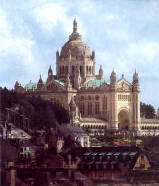
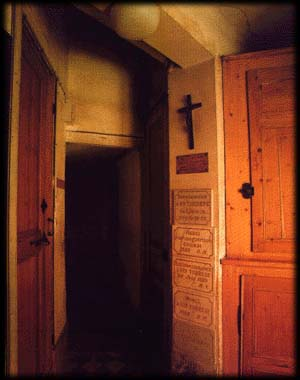
1 - Basílica de Lisieux; 2 - Entrada do Claustro no Carmelo de Lisieux;
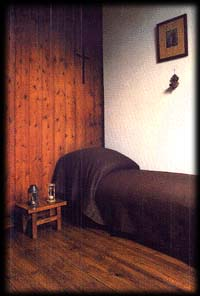
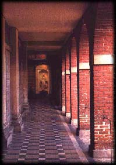
1 - Cela de Santa Teresinha; 2 - Carmelo, circulação ao lado do jardim;
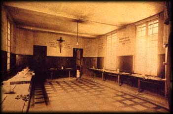
1 - Carmelo de Lisieux, refeitório.
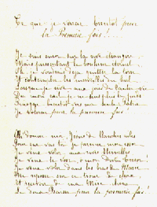
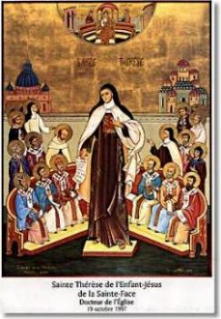
1 - Carta escrita por Santa Teresinha; 2 - Imagem para homenageá-la quando recebeu do Papa João Paulo II o título de Doutora da Igreja.
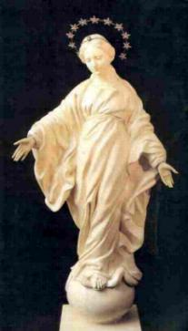
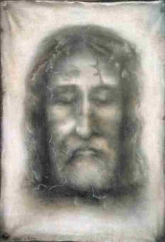
1 - Imagem de NOSSA SENHORA que sorriu para Santa Teresinha; 2 - Imagem da Sagrada Face que ela conservava em sua Cela;
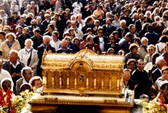
1 - Urna com Relíquias da Santa, que percorre o mundo.
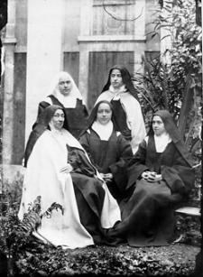
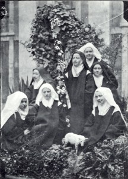
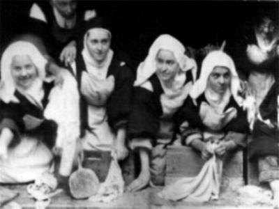
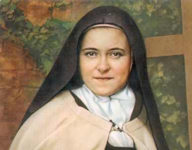
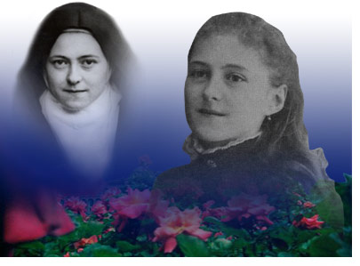
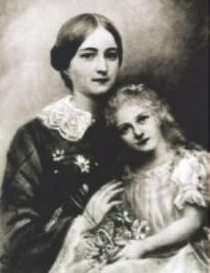
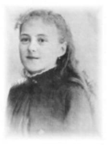
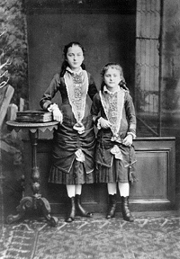
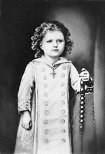
Visite o PORTAL do Apostolado dos Sagrados Corações, nele encontrará todos os nossos Sites: NOSSA SENHORA DA CONCEIÇÃO APARECIDA, A IMACULADA CONCEIÇÃO (Revelação Divina), SÃO PAULO, APÓSTOLO DOS GENTIOS , NOSSA SENHORA DE NAJU (Impressionantes Milagres Eucarísticos), O MISTÉRIO DE DEUS, JESUS DE NAZARÉ (O Rei dos Reis), ADORÁVEL E MISTERIOSO ESPÍRITO SANTO, A VIDA DE NOSSA SENHORA, OS ANJOS DO SENHOR, A VIDA ADMIRÁVEL DE SÃO JOSÉ, SÃO JUDAS TADEU (Causas Impossíveis), NOSSA SENHORA DE FÁTIMA (o Mistério e os Segredos) e muitos outros, fundamentados na Sagrada Escritura, na Tradição Cristã, nas Manifestações Sobrenaturais e na Vida e Obra dos Santos, com o objetivo de informar somente a Verdade.
http://www.apostoladosagradoscoracoes.com/